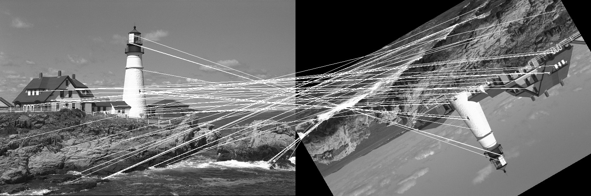

ImageFeatures.jl
The ImageFeatures package allows you to compute compact "descriptors" of images or image regions. These descriptors are in a form that permits comparison against similar descriptors in other images or other portions of the same image. This can be useful in many applications, such as object recognition, localization, or image registration.
ImagesFeatures has its own documentation, and you should consult that for a comprehensive overview of the functionality of the package. Here, we'll briefly illustrate one type of feature and its application to image registration, the BRISK descriptor.
The BRISK descriptor examines the structure of an image around a keypoint. Given a keypoint, the mean intensity (loosely-speaking) is computed in a set of patches surrounding the point:

BRISK then re-represents these intensities in a way that is invariant under rotations. This allows you to compare descriptors in two images, one of which might be a rotated version of the other.
Let us take a look at a simple example where the BRISK descriptor is used to match two images where one has been translated by (50, 40) pixels and then rotated by an angle of 75 degrees. We will use the lighthouse image from the TestImages package for this example.
First, let us create the two images we will match using BRISK.
using ImageFeatures, TestImages, Images, ImageDraw, CoordinateTransformations
img = testimage("lighthouse")
img1 = Gray.(img)
rot = recenter(RotMatrix(5pi/6), [size(img1)...] .÷ 2) # a rotation around the center
tform = rot ∘ Translation(-50, -40)
img2 = warp(img1, tform, axes(img1))To calculate the descriptors, we first need to get the keypoints. For this tutorial, we will use the FAST corners to generate keypoints (see fastcorners).
features_1 = Features(fastcorners(img1, 12, 0.35))
features_2 = Features(fastcorners(img2, 12, 0.35))To create the BRISK descriptor, we first need to define the parameters by calling the BRISK constructor.
brisk_params = BRISK()Now pass the image with the keypoints and the parameters to the create_descriptor function.
desc_1, ret_features_1 = create_descriptor(img1, features_1, brisk_params)
desc_2, ret_features_2 = create_descriptor(img2, features_2, brisk_params)The obtained descriptors can be used to find the matches between the two images using the match_keypoints function.
matches = match_keypoints(Keypoints(ret_features_1), Keypoints(ret_features_2), desc_1, desc_2, 0.1)We can use the ImageDraw.jl package to view the results.
grid = hcat(img1, img2)
offset = CartesianIndex(0, size(img1, 2))
map(m -> draw!(grid, LineSegment(m[1], m[2] + offset)), matches)
You can see that the points have been accurately matched despite the large magnitude of this rotation.